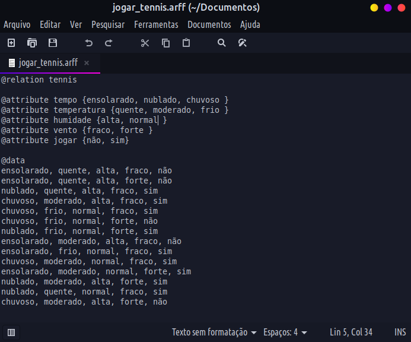
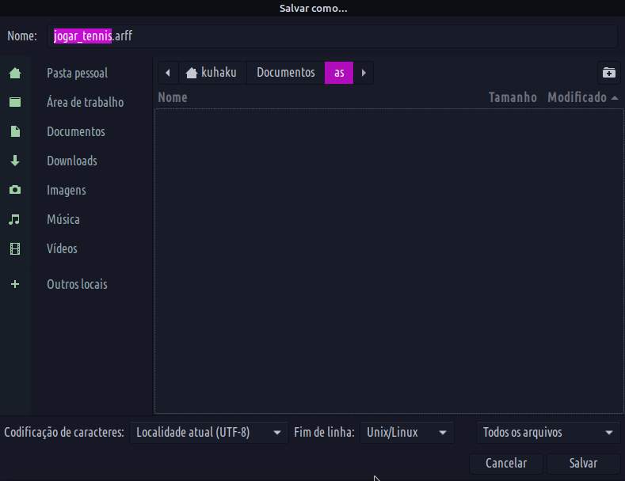
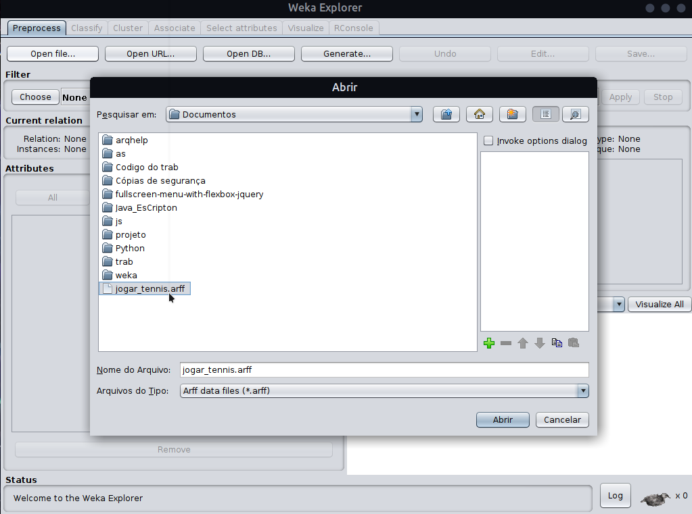
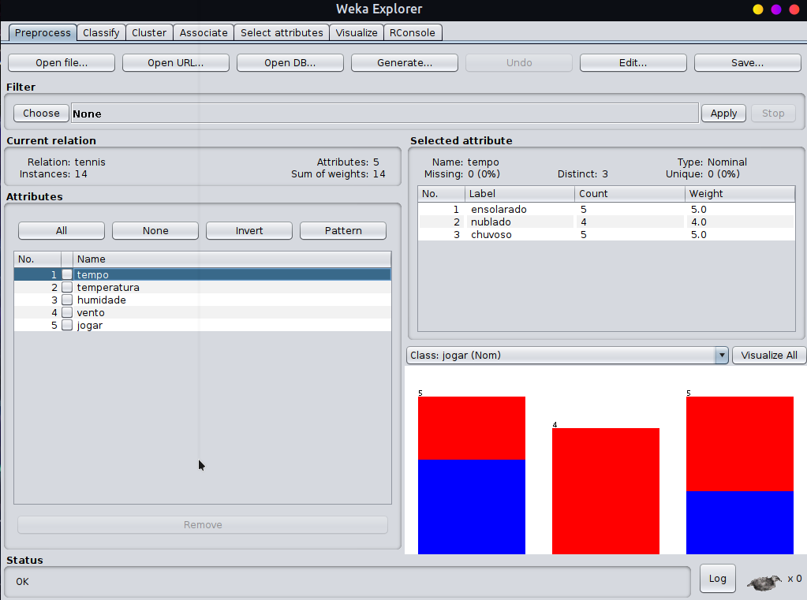

Utilizando o Weka

Criando um arquivo .arff
Primeiramente abra o bloco de notas, ou qualquer editor de texto que tenha disponivel e crie um arquivo (.arff). Exemplo:

Em seguida salve o arquivo no formato (.arff) dessa forma:

Após ter salvo entre no Weka e vá em explorer:

Após isso vá em Open file...

Em seguida procure seu arquivo onde o salvou e abra-o

Depois de aberto você o verá assim:

No fim percebemos que criar e abrir um arquivo (.arff) é bem simples. Agora podemos relaxar!